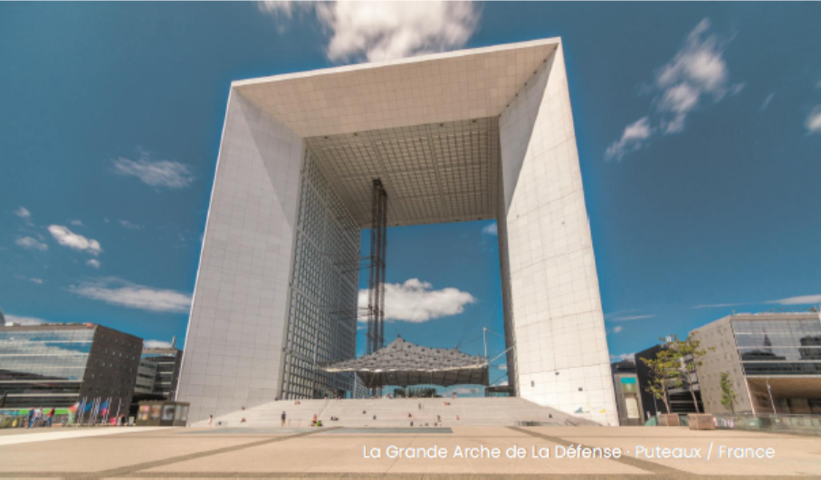
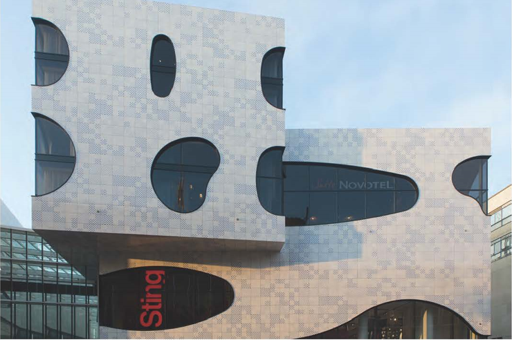
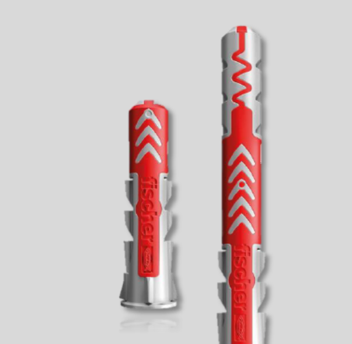

FZP II石材背擴孔錨栓系統
A4高耐蝕不鏽鋼選項
EN / ETA國際技術評估與驗證概念
360°設計、供料、施工技術整合
SYSTEM SOLUTIONS
外牆與錨固系統
從石材背擴孔、磁磚背擴孔、混凝土錨固、預埋槽到萬能錨栓，依據不同工程與固定需求提供對應系統選擇。


MECHANICAL ANCHOR
FAZ II 錨栓
適合混凝土結構固定，提供高性能機械式錨固選項，可配合支架、鋁軌與外牆次結構應用。

CAST-IN CHANNEL
fischer 預埋槽系統
InnoLock FES 專利創新鎖齒型預埋槽，適用於單元式帷幕牆等工程，採安全機械互鎖設計，提供穩定可靠的承載與施工性能。

萬能錨栓系列
fischer DuoPower 萬能錨栓
適用多種常見建築基材的尼龍萬能錨栓系列，可作為室內裝修、設備與一般固定應用的產品大項。

WHY FISCHER
從固定點開始
提升整體外牆品質
外牆安全不是單一零件，而是設計、材料、施工與檢驗的整合。背擴孔系統能將固定點隱藏於石材背面，並降低傳統開槽固定對石材邊緣的依賴。
隱藏式固定外觀完整，正面不露固定件。
精準定位利於模組化設計與現場調整。
耐候考量可依環境選用適合材質與防蝕等級。
工程整合配合鋁軌、支架及結構錨固系統。
PROJECT REFERENCES
全台工程案例
fischer 錨固與石材背擴孔系統應用遍及台北、台中、台南與高雄。點擊案例圖片可放大查看。
ENGINEERING VALUE
技術導向，而不只是材料供應
可依專案需求整理錨固配置、材料規格、施工節點與相關技術資料，讓建築、結構與現場施工更容易溝通。
01系統選型
依石材、基材、荷重與環境條件選擇適合的固定方案。
02節點整合
背栓、支架、鋁軌與主體結構錨固之整體配置。
03技術文件
協助彙整產品資料、安裝要求與工程送審所需資訊。
04現場支援
施工階段提供系統說明、安裝重點與問題協調。
CONTACT
有外牆石材或錨固需求？
留下建案資訊，我們可依石材尺寸、外牆系統、樓高與基材條件協助初步評估。
富華成股份有限公司
電話：(02)2773-5110 傳真：(02)2773-5339
fischer 外牆與錨固系統專業服務